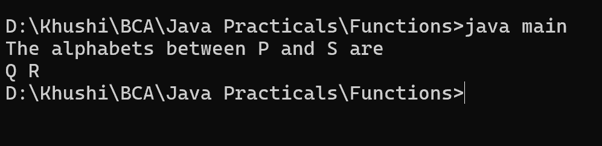

5. Write a Java method to print characters between two characters (i.e. A to P).
class a{
void Print(char a, char b){
if((int)a+1==(int)b)
System.out.println("There are no alphabets in between "+a+"
and "+b);
else{
System.out.println("The alphabets between "+a+" and "+b+"
are");
for(int i=(int)a+1;i<(int)b;i++){
System.out.print((char)i+" ");
}
}
}
}
class main{
public static void main(String st[]){
a obj=new a();
obj.Print('P','S');
}
}
